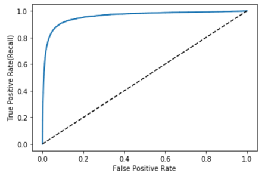

Metrics
Table of Contents
1 DONE [C] Metrics
- State "DONE" from "TODO"
https://en.wikipedia.org/wiki/Confusion_matrix
P
positive, 即 ground truth 中的真值, 或者叫 real positive
N
negtive, ground truth 中的假值, 或者叫 real negative
TP
true positive. 预测为真 (positive), ground truth 为真 (true)
FP
false positive. 预测为真 (positive), ground truth 为假 (false)
TN
true negative, 预测为假 (negtive), ground truth 也为假 (true)
FN
false negative, 预测为假 (negtive), ground 为值 (false)
TPR
true positive rate, 或者叫 recall (召回率), 查全率.
表示 ground truth 的 真值被预测正确 的比例
\(\frac{TP}{TP+FN}\) 或 \(\frac{TP}{P}\)
FPR
false positive rate
表示 ground truth 中的 假值被预测错误 的比例
\(\frac{FP}{FP+TN}\) 或 \(\frac{FP}{N}\)
FNR
false negative rate
\(\frac{FN}{FN+TP}\) 或 \(\frac{FN}{P}\)
TNR
true negative rate
\(\frac{TN}{TN+FP}\) 或 \(\frac{TN}{N}\)
FRR
false reject rate, 即 FNR
FAR
false accept rate, 即 FPR
EER
equal error rate.
通过调整 threshold 使 FAR 与 FRR 相等, 这时的 FAR 或 FRR 称为 EER.
这个值与 ROC 曲线有点关系:
ROC 的 x 轴是 FPR, y 为 TPR. 由于 TPR = 1-FNR, 所以 fnr-fpr 曲线的形状会类似于 \(y=\frac{1}{x}\), 这个曲线与 \(y=x\) 的交点即为 EER
Accuracy
\(\frac{TP+TN}{P+N}\)
Precision
查准率, 测试的真值中 ground truth 为真的比例
\(\frac{TP}{TP+FP}\)
F-Score
F-Score 是 precision 和 recall 的调和平均
ROC
receiver operating characteristic
当选择不同的 threshold 时, 得到不同的 FPR 和 TPR. 以 FPR 为横轴, TPR 为纵轴绘制的曲线
这个曲线有如下的性质:
- x,y 坐标范围均为 [0~1]
- (0,0),(1,1) 必定在曲线上.
- 当 threshold 为 0 时, 所有预测值均为真, 导致 TPR 为 1, FPR 也为 1
- 当 threshold 为 1 时, 所有预测值均为假, 导致 TPR 为 0, FPR 也为 0
- 若完全随机的预测, 而 ROC 曲线 是一条连接 (0,0) 和 (1,1) 的真线
- 一个好的预测得到的 ROC 曲线应该在上面提供的直线的上方
g
完美的预测应该得到上图的 ROC 曲线: FPR 很低, 同时 TPR 很高, 即 ground truth 中的真值和假值都能测试正确
AUC
aera under the roc curve
ROC 曲线下面围成的面积, 范围应该是 [0.5, 1]
1.1 example
https://keras.io/api/metrics/classification_metrics/#truepositives-class
#!/usr/bin/env python3 import tensorflow as tf import numpy as np from sklearn.metrics import roc_curve, roc_auc_score import matplotlib.pyplot as plt y_true = np.array([0, 0, 1, 1]) y_pred = np.array([0, 0.5, 0.3, 0.9]) print("calc using sklearn") fpr, tpr, thresholds = roc_curve(y_true, y_pred) print(tpr, fpr, thresholds) plt.plot(fpr, tpr) plt.show() print("calc using keras") m = tf.keras.metrics.AUC(num_thresholds=3) m.update_state(y_true, y_pred) # # num_thresholds 至少为 2, 对应的 threshold 为 [0,1] # 当 num_thresholds 大于 2 时, threshold 为 [0, a,b,..., 1], 中间的 a,b,... 为 # 插值 # # threshold values are [0, 0.5, 1] # tp = [2, 1, 0], fp = [2, 0, 0], fn = [0, 1, 2], tn = [0, 2, 2] # recall = [1, 0.5, 0], fp_rate = [1, 0, 0] # auc = ((((1+0.5)/2)*(1-0))+ (((0.5+0)/2)*(0-0))) = 0.75 print("auc", m.result().numpy()) m = tf.keras.metrics.TruePositives([0, 0.5, 1]) m.update_state(y_true, y_pred) print("tp", m.result().numpy()) m = tf.keras.metrics.FalseNegatives([0, 0.5, 1]) m.update_state(y_true, y_pred) print("fn", m.result().numpy()) print("calc manually") thresholds = np.array([0 - 1e-7, 0.5, 1 + 1e-7]) thresholds = np.broadcast_to(thresholds, (4, 3)).T # tp,fp,fn,fn tp = np.bitwise_and(y_true.astype(bool), y_pred > thresholds).sum(axis=1) print("tp", tp) fp = np.bitwise_and(~y_true.astype(bool), y_pred > thresholds).sum(axis=1) tn = np.bitwise_and(~y_true.astype(bool), ~(y_pred > thresholds)).sum(axis=1) fn = np.bitwise_and(y_true.astype(bool), ~(y_pred > thresholds)).sum(axis=1) print("fn", fn) # tpr,fpr # tp+fn 即 ground truth 里有多少 true # tpr 及 recall (查全率) tpr = tp / (tp + fn) # fp+tn 即 ground truth 有多少 false fpr = fp / (fp + tn) # precision,recall precision = tp / (tp + fp) recall = tpr f_score = precision * recall / (2 * (precision + recall)) r = range(len(thresholds)) area = 0 for a, b in zip(r, r[1:]): area += (tpr[a] + tpr[b]) / 2 * (fpr[a] - fpr[b]) print(area) plt.plot(fpr, tpr) plt.show()
calc using keras auc 0.75 tp [2. 1. 0.] fn [0. 1. 2.] calc manually tp [2 1 0] fn [0 1 2] 0.75